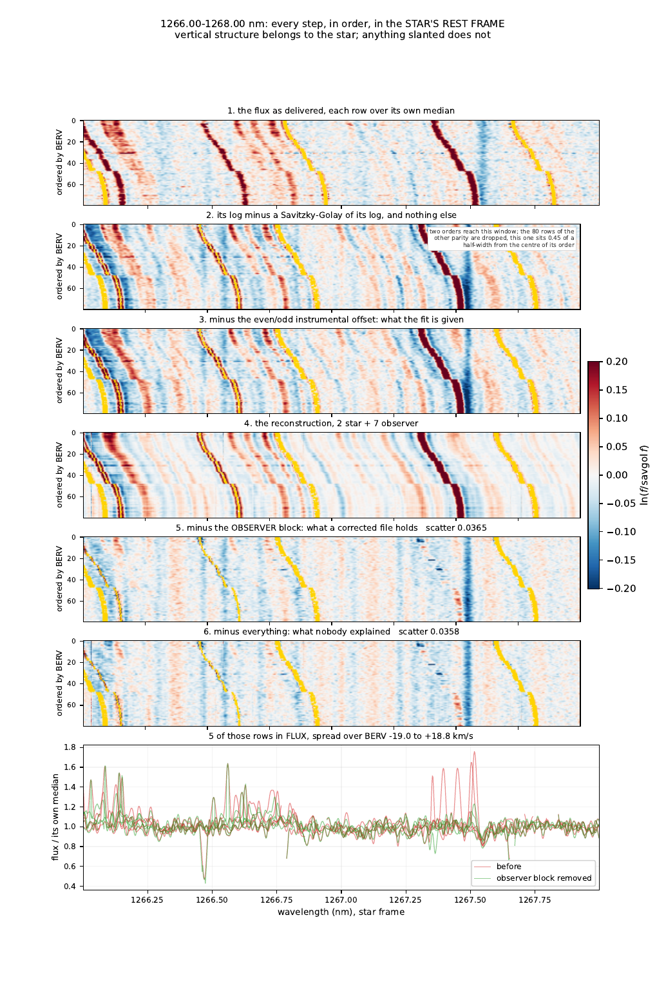
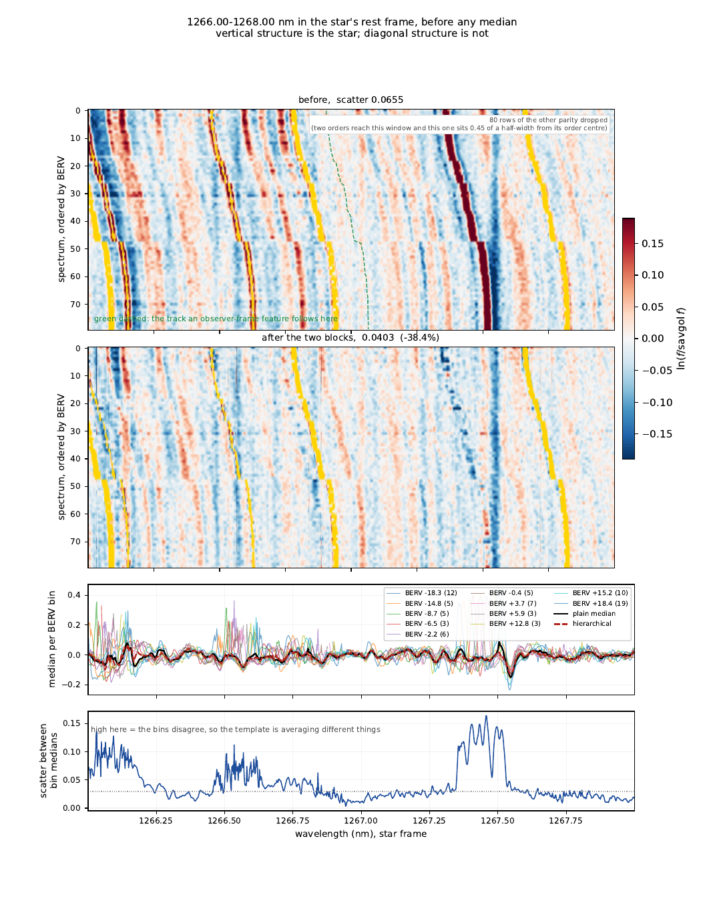
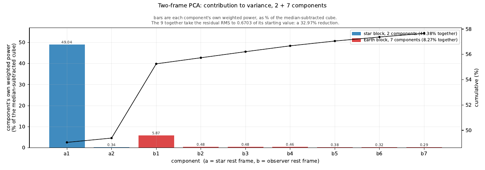
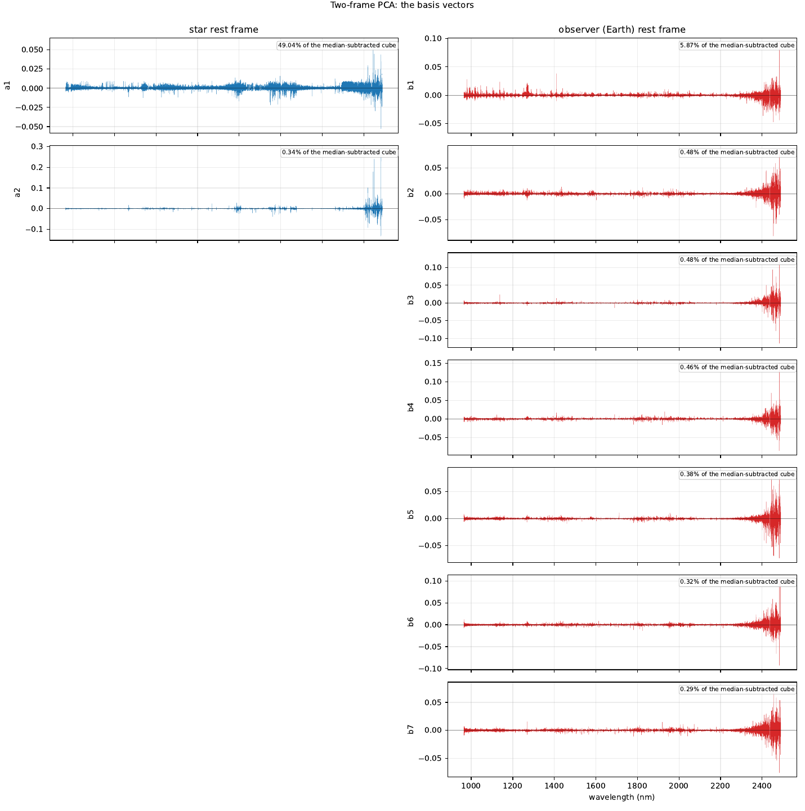

The idea
Over a year of observing, the barycentric velocity sweeps by tens of kilometres per second. That is enough to separate the star from the atmosphere, but only if the model is told which of the two travels.
y_n = S_n P a_n + Q b_n
S_n is an exact translation by that exposure's own
barycentric velocity, P is the basis that follows the star
and Q the one that stays put on the detector. Both are
solved for together, under weights taken from the noise you can
measure rather than the noise a photon model claims: on the red
end of a SPIRou spectrum those two disagree by a factor of fifty, and
the photon model calls the noisiest region the quietest.
Nothing is taken out before the fit except one instrumental offset. No median template, no mean spectrum removed in front. Whatever is subtracted early is outside the model, and the correction removes components, so an early subtraction would be fitted by nothing and removed from nothing.
Every step, on one page
A window of 1266 to 1268 nm, drawn in the star's rest frame with the rows ordered by barycentric velocity. Vertical structure belongs to the star; anything slanted does not. The oxygen airglow band at 1267.44 nm runs diagonally through the first four panels and is simply gone from the fifth.

Vertical or slanted

What each component carries

The bases themselves

Running it
Spectra go in data/<object>/. Then:
pca2d-preclean --object TOI-2120
That is the whole interface. The instrument is read from the
INSTRUME keyword of the files, never chosen on a command
line, because reading the wrong extension raises no error: it returns
different photons.
Four stages, each announcing how long it took:
- cube — every spectrum on one log-uniform grid
- fit — the two bases and their coefficients
- figures — one multipage PDF, parameters first, then every plot
- correct — the observer block divided out, written as t.fits
Adding a spectrograph
A block in config.yaml, not a line of code:
instruments:
YOURS:
extensions:
flux: FluxAB
wave: WaveAB
blaze: BlazeAB
recon: Recon
sky: OHLine
domain:
wave_min: 955.0
wave_max: 2500.0
wave0: 955.0The wavelength solution comes from the extension, never from header polynomials, and the blaze from the blaze extension of the same file.
Access
The repository is private for the moment. If you would like access, or would like to try it on a dataset of your own, contact Étienne Artigau (Université de Montréal). This page stays public so the method and its figures can be pointed at.